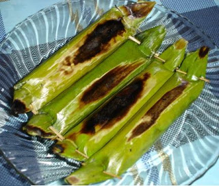

Gogoso

Gogoso adalah salah satu resep makanan khas orang bugis makassar yang sangat digemari di Sulawesi Selatan ketika lebaran,
selain ketupat lebaran, gogoso pun juga turut meramaikan bersama dengan bersama dengan aneka masakan lainya pada hari-hari biasa,
gogoso banyak ditemukan didaerah pantai losari atau dipinggir-pinggir jalan kota makassar biasanya dijajakan oleh pedagang asongan bisanya dijajakan bersama telur asin atau lebih akrab dengan sebutan orang makassar Bayao Kannasa, dan kacang rebus.
Gogoso ini mirip makanan lemper dari jawa. Makanan yang berbahan utama beras ketan ini sudah tidak asing lagi bagi masyarakat Bugis Makassar.
Makanan gogoso ini mempunyai 2 jenis, salah satunya adalah gogoso kambu atau gogoso yang menggunakan isi.
Resep Membuat Gogoso ini sendiri yaitu dengan dibakar, sehingga membuat makanan ini mempunyai keistimewaan dan citarasa tersendiri.
Resep Membuat Gogoso
Bahan-bahan:
~ 250 gram beras ketan, di rendam selama 2 jam.
~ 150 ml santan yang diambil dari 1/2 butir kelapa.
~ 1-2 lembar daun salam.
~ 1/2 sendok teh garam.
Bahan isi gogoso:
~ 1 lembar daun salam.
~ 1 sendok teh garam.
~ 1 sendok makan minyak.
~ 3/4 sendok teh gula pasir.
~ 50 ml air.
~ 200 gram daging kakap, (Bisa juga menggunakan abon daging sapi atau ayam).
Bumbu halus:
~ 1 sendok teh ketumbar.
~ 2 siung bawang putih.
~ 2 buah cabai merah (keriting).
~ 2 butir kemiri, di sangrai.
~ 3 buah cabai rawit merah.
~ 4 butir bawang merah.
Cara Membuat Gogoso:
~ Pertama, kukus beras ketan selama kurang lebih 15 menit.
~ Rebus santan, daun salam dan garam, sambil diaduk rata sampai mendidih.
~ Selanjutnya, tuangkan beras kukus tadi ke dalam rebusan santan, Aduk rata kembali sampai meresap. Kukus selama 30 menit sampai matang.
~ ISI : Lumuri daging kakap dengan 1/4 sendok teh air jeruk nipis. Kukus sampai matang dan haluskan.
~ Tumis bumbu halus, daun salam sampai harum, tambahkan daging kakap, aduk rata.
~ Masukkan air, gula pasir dan garam, lalu masak sampai meresap.
~ Bungkus adonan ketan dengan daun pisang, jangan lupa masukkan bahan untuk isinya, bungkus lagi dengan daun muda yang tua, lalu tusuk ujungnya menyerupai bentuk permen.
~ Terakhir, Panggang adonan di atas bara api sampai matang. Angkat dan dinginkan.
Sumber: WIDHIAANUGRAH.COM